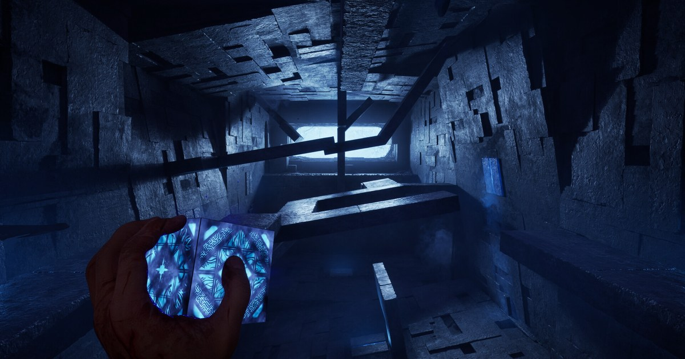

Hellraiser: Revival beat Resident Evil Requiem to win Horror Game of the Year
Clive Barker's Hellraiser: Revival took the top prize at the fifth Horror Game Awards in London on Friday, beating Resident Evil Requiem — even though Requiem walked away with the most trophies of the night.

Disclosure: this post contains affiliate links. I earn a commission on qualifying purchases.
The biggest upset of horror gaming's awards season happened in London on Friday night, and it was not even close to the script everyone expected. Clive Barker's Hellraiser: Revival won Game of the Year at the fifth Horror Game Awards, beating Resident Evil Requiem — the game that had dominated the conversation all year and collected the most trophies on the night itself.
The ceremony streamed live from a sold-out venue at 26 Leake Street in Waterloo, and the room split its verdict in a way that told the whole story of the year in horror. The fans gave Requiem their award. The jury gave the bigger one to Hellraiser.
The night Requiem won almost everything — except the big one
Requiem's haul was the largest of any game at the show. Capcom's survival horror entry took Players' Choice, Best Narrative, Scariest Horror Game, and Most Accessible Horror — four trophies that, on most nights, would make it the story of the ceremony. It had already won the top prize at the Golden Joystick Awards days earlier, which made Friday's result feel even more like a turn.
But Game of the Year is decided by a jury choosing from the public's top five, and the jury went another way. Hellraiser: Revival, Saber Interactive's first-person horror game built around Clive Barker's Cenobites, took the trophy ahead of a field of sixteen finalists that also included REANIMAL, Silent Hill: Townfall, ROUTINE, and Silver Pines.
The nominations had pointed toward a different winner entirely. REANIMAL, Tarsier Studios' co-op horror game, led the field with ten nominations and left with a single award, Best New Multiplayer Horror. Requiem had nine nominations. Hellraiser and Silent Hill: Townfall had eight each.
Bradley's return took Best Performance
The night's other headline belonged to the man under the pins. Doug Bradley won Best Performance for returning as Pinhead, the role he first played in 1987. He is still the definitive voice of the character — and the jury recognized it.
It was a fitting double for the game. Hellraiser: Revival is built on Barker's mythology from the ground up: you play Aidan, who uses the Genesis Configuration puzzle box to try to pull his girlfriend Sunny out of the Labyrinth, the otherworldly hellscape ruled by the Cenobites. The box is the game's central mechanic and its signature image — the same glowing puzzle box in the screenshot above.
The rest of the night spread the prizes around
The fifth Horror Game Awards covered more than one hundred nominated games across twenty-one categories, with five new categories added for 2026. The prizes went wide rather than concentrating on one winner, which left the show feeling like a tour of the genre instead of a coronation.
Silent Hill: Townfall won the new Critics' Choice Award. Bloober Team was named Best Developer, and longtime Silent Hill composer Akira Yamaoka received the Lifetime Achievement award. Tenebris Somnia took Best Indie Horror and Best Art Direction, with its developer Saibot Studios named Best Indie Developer. ROUTINE won Technical Achievement. Zach Cregger's Resident Evil film took the new Best Adaptation award.
The game itself
Hellraiser: Revival launched on October 8 on PlayStation 5, Xbox Series X|S, PC, and Nintendo Switch 2, priced at $39.99 for the standard edition. It carries a Very Positive rating on Steam, and it arrived as a genuine surprise — a licensed horror game that critics and players took seriously on its own terms, not just as a nostalgia play.
That is part of what makes the win land. Requiem is the bigger game, from the bigger franchise, with the bigger marketing machine behind it. Hellraiser: Revival is the smaller, cheaper, stranger game — and on Friday night, the people who judge horror games for a living picked it anyway.
What comes next
Requiem's awards run is not over. It carries six nominations into The Game Awards on December 10, the same number as Control Resonant, with Grand Theft Auto VI leading the field at eight. Hellraiser: Revival, meanwhile, did not receive a nomination at The Game Awards in any category — which makes its Horror Game Awards win the last word on its year, and a loud one.
For a genre that spent 2026 arguing about whether the old names still matter, Friday gave an answer: the old names matter plenty, as long as someone new is holding the box.
Sources: Hellraiser: Revival Takes Horror Game of the Year as Resident Evil Requiem Wins the Most Awards (The Escapist) · 'Hellraiser: Revival' Wins Game of the Year at The Horror Game Awards 2026 (Bloody Disgusting) · Hellraiser: Revival Wins Horror Game Awards 2026 GOTY (Insider Gaming) · Hellraiser: Revival Wins Game of the Year Award (Game Rant) · Hellraiser: Revival beats Resident Evil Requiem to Horror Game Awards Game of the Year (GamesReviews) · Clive Barker's Hellraiser: Revival on Steam (Steam)
Gear up: Razer — mice, keyboards, headsets and laptops.